Autores: Shuai Ren, Xinyu Zhang, Huizhao Li, Changjun Hu, Dandan Chen — School of Computer and Communication Engineering, University of Science and Technology Beijing.
Revista: Scientific Reports (2025) 15:22439, DOI: 10.1038/s41598-025-05802-7
🎯 Idea central
Construir una cadena completa de análisis con machine learning para los clústeres de defectos que se forman en los materiales de la vasija de presión de un reactor nuclear (RPV) bajo irradiación. A partir de un dataset masivo de cascadas de colisión simuladas por dinámica molecular (MISA-MD) en hierro BCC, el trabajo aporta: (1) un vector de características físico nuevo para describir la forma de cada clúster (distancias y ángulos entre defectos adyacentes, no respecto del centroide), (2) clustering no supervisado (t-SNE/UMAP + HDBSCAN) para clasificar morfologías, y (3) un algoritmo de reconocimiento de configuraciones internas ("llenado de red de doble puntero" + componentización en líneas SIA) capaz de identificar lazos paralelos <111>/<100> y clústeres en anillo C15 en sistemas de millones de átomos.
🔬 Contexto y motivación
- La RPV es la barrera de seguridad crítica de una central nuclear: la irradiación neutrónica acumula vacancias, intersticiales y lazos de dislocación que fragilizan el acero y reducen su tenacidad a la fractura.
- Las cascadas de colisión ocurren en ~10 picosegundos y a escala atómica: no se pueden observar experimentalmente (la tomografía de sonda atómica es cara y delicada con material radiactivo). La MD es la herramienta estándar para simularlas.
- El grupo se apoya en el concepto de reactor numérico (prototipo chino CVR1.0) y en MISA-MD, un código MD propio optimizado para supercomputadoras heterogéneas (~51 % más rápido que LAMMPS en GPU), que genera datos de cascadas a escalas de hasta 16 millones de átomos.
- El problema: analizar esos volúmenes de datos a mano es inviable, y los métodos clásicos de conteo de defectos (celda de Wigner-Seitz) escalan mal (O(N²)) y no describen la configuración interna de los clústeres.
⚙️ Metodología
Dataset
- Cascadas en Fe puro BCC a 600 K, energías de PKA de 10, 20, 30 y 50 keV, direcciones [122], [135] y [235]; cajas de 80³ a 200³ celdas (1 a 16 millones de átomos); 41 000 pasos de tiempo, con volcado cada 1000 pasos.
- Los datos se organizan en colecciones estructuradas (MongoDB-like):
inputPara,result,postProcessing,findDefects,defects,clusters,clusterFeaturesyallClusters.
Partición en clústeres
- Dos defectos pertenecen al mismo clúster si distan menos de L/2 (L = constante de red); entre vacancias no-pseudo el umbral se relaja a √3·L/2 (la diagonal de la celda).
Vector de características físico
- En vez de medir distancias/ángulos respecto del centroide (método habitual, sensible al ruido: una "cola" en un anillo cambia todo el histograma), se calculan entre puntos defectivos adyacentes.
- Las distancias se normalizan por la máxima y los ángulos por el intervalo; ambos se discretizan en bins → vector de dimensión fija m+n, invariante a traslación, rotación y escala.
Clustering no supervisado
- Reducción de dimensionalidad no lineal con t-SNE y UMAP (distancia chi-cuadrado, embedding 2D); UMAP resulta preferible por preservar mejor la estructura global.
- Clasificación con HDBSCAN (no requiere fijar ε ni el número de clases); calidad evaluada con el coeficiente de silueta.
Reconocimiento de configuraciones
- Conteo de defectos: mejora del método W-S con pseudo-defectos (pares intersticial-vacancia extra que no se cuentan pero ayudan a describir la configuración) y el método de llenado de red con doble puntero: se ordenan átomos por su punto de red más cercano y se recorren átomos y puntos de red en paralelo → O(N log N) con memoria adicional constante.
- Componentización: los defectos tipo smileyface (3 defectos en un punto de red) y glasses (pares) se conectan en líneas SIA (átomos auto-intersticiales colineales, dirección ≈ vector de Burgers); las líneas se fusionan si distan <1.0 Å y forman <20°.
- Identificación: las líneas SIA son nodos de un grafo (matriz de adyacencia comprimida en CSR); reglas geométricas definen aristas (paralelas: d ≤ 1NN y θ≈0°; anillo: d = 1NN o 3NN y θ≈60°/90°) y una búsqueda en anchura de componentes conexas clasifica cada clúster como paralelo (||, ||//), anillo C15 (@) o metaestable (#).
📊 Resultados clave
El vector de características por puntos adyacentes gana
| Representación | Clústeres etiquetados como ruido (−1) | Coef. de silueta |
|---|---|---|
| Basada en centroide | 219 / 3632 | 0.7118 |
| Basada en puntos adyacentes | 111 / 3632 | 0.7571 |
- Las proyecciones t-SNE/UMAP separan espontáneamente clústeres de vacancias y de intersticiales, aunque las features no fueron diseñadas para eso: la geometría codificada tiene significado físico.
Conteo de defectos validado contra OVITO y el modelo NRT
- El método de doble puntero reproduce exactamente los conteos de pares de Frenkel de OVITO en las 12 condiciones (p. ej. 600K-50keV-135: 214 pares), con menos memoria.
- Las curvas número de defectos vs. tiempo muestran el patrón clásico: pico térmico, recombinación y estabilización hacia el paso ~23 000, en línea con el modelo NRT.
Reconocimiento de configuraciones físicamente significativas
- Identifica automáticamente clústeres SIA paralelos <111>, mixtos <100>/<111>, anillos C15 y metaestables, en sistemas de millones de átomos.
- La fracción de clústeres C15 es 16.7 % a 10 keV, 10.0 % a 30 keV y 11.5 % a 50 keV — dentro del rango 5–18 % reportado en la literatura DFT/MD, sin tendencia monótona con la energía (estabilidad de formación).
- La fracción de defectos dentro de C15 cae de 17.6 % (10 keV) a 3.7 % (50 keV): a alta energía los C15 capturan SIAs, se vuelven inestables y colapsan a otras configuraciones, como predice la literatura.
Visualización espacial
- Distribución 3D de clústeres de vacancias e intersticiales y mapas 2D de densidad espacial por especie — algo que OVITO no ofrece de forma separada — coherentes con la imagen clásica: corazón de la cascada rico en vacancias, periferia rica en intersticiales.
- La evolución temporal (pasos 3000 → 41 000) reproduce el ciclo crecimiento-contracción de los clústeres observado en OVITO.
🧩 Por qué importa
- Convierte el análisis de cascadas, tradicionalmente manual y cualitativo, en un pipeline automático y escalable (O(N log N)) apto para los volúmenes de datos de los reactores numéricos.
- El descriptor por puntos adyacentes es una idea transferible a cualquier problema de clasificación de morfologías atomísticas (voids, loops, precipitados).
- Detectar y cuantificar C15 de forma automática es relevante porque estos clústeres, invisibles experimentalmente por su tamaño, podrían jugar un rol clave en la fragilización por radiación del Fe.
- Los mapas de densidad separados por especie dan una vía cuantitativa para estudiar la correlación espacial vacancia-intersticial, que gobierna la recombinación y la evolución a largo plazo.
⚠️ Limitaciones
- Solo Fe puro BCC: el acero RPV real contiene Cu, Ni, Mn y carburos que cambian la energética de los defectos (el esquema de datos contempla aleaciones, pero no se analizan).
- Validación contra OVITO y literatura, no contra experimentos; los C15 siguen sin observación experimental directa.
- El clustering no supervisado solo distingue morfologías simples; la identificación fina depende de umbrales empíricos (1.0 Å, 20°, reglas 1NN/3NN) ajustados a BCC.
- Escala temporal de MD (~ps–ns): la evolución a largo plazo (envejecimiento, dosis acumulada) requeriría acoplar kMC u otros métodos.
- HDBSCAN requirió ajuste manual de MinPts por tipo de feature; la sensibilidad a estos parámetros no se reporta en detalle.
📎 Conexiones
- Comparte el problema físico (cascadas en Fe/aleaciones, conteo W-S, pares de Frenkel) con [[ilove-Nordlund.2018]] y [[MD_cascadas_CuNi_irradiacion_Wei_2025]], y la escala temporal extendida con [[MD_kMC_tungsteno_dose_rate_Boleininger_2025]].
- La idea de describir defectos con features geométricos + clustering no supervisado es paralela a [[Autoencoder_SOAP_cascadas_FeNiCr_DelFre_2025]] y [[FaVAD_fingerprints_defectos_vonToussaint_2020]], pero aquí el descriptor es artesanal (distancias/ángulos adyacentes) en vez de aprendido.
- Los histogramas de distancias/ángulos invariantes recuerdan a los parámetros de orden de [[Steinhardt_bond_orientational_order_1983]].
- El uso de OVITO como referencia de validación lo conecta con casi todo el corpus de papers de irradiación del repo.
Figuras del Paper (25)
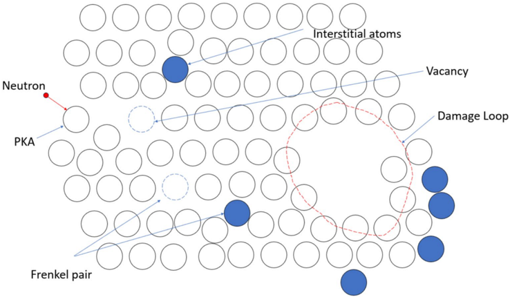
Figura 1. Esquema del daño por radiación.
Panorama del problema: los neutrones desplazan átomos de la red y generan vacancias, intersticiales y lazos de dislocación que se acumulan en el acero de la vasija. Es la cadena causal que motiva todo el trabajo: irradiación → defectos → clústeres → fragilización.
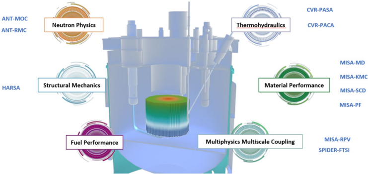
Figura 2. Esquema del sistema prototipo de reactor numérico (CVR1.0).
El "reactor virtual" chino CVR1.0: software de simulación multiescala en supercomputadoras que reemplaza experimentos de irradiación costosos y lentos. MISA-MD, la fuente de datos de este paper, es el módulo de dinámica molecular de este ecosistema.
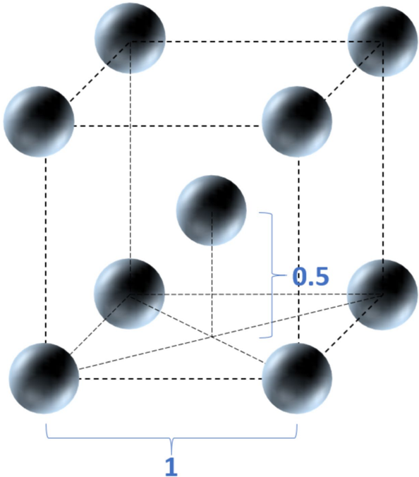
Figura 3. Esquema de la estructura cristalina cúbica centrada en el cuerpo (BCC).
La celda unitaria del Fe-α: un átomo en cada vértice y uno en el centro del cubo. Esta geometría define los puntos de red contra los que se cuentan los defectos y los umbrales de distancia (L/2, √3·L/2) usados para agrupar defectos en clústeres.
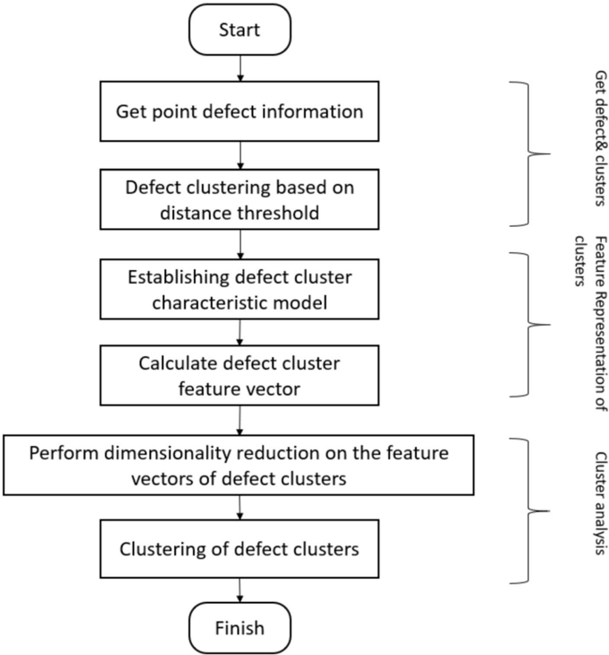
Figura 4. Proceso de análisis por clustering de los clústeres de defectos de cascada.
Las tres etapas del análisis morfológico: (1) particionar los defectos en clústeres por distancia, (2) representar cada clúster con un vector de características estructurales, (3) reducir dimensionalidad y aplicar clustering no supervisado para obtener las clases de formas.
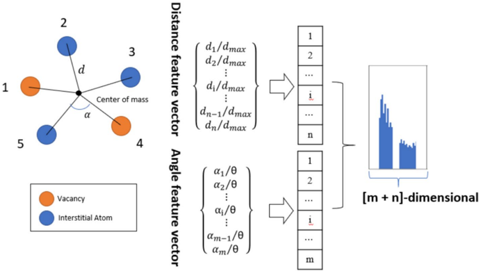
Figura 5. Esquema del método de representación de los clústeres de defectos.
Cómo se construye el vector de características: de las coordenadas 3D se extraen distancias y ángulos, se normalizan a (0,1] y se acumulan en bins de un histograma. El resultado es un vector de dimensión fija, comparable entre clústeres de distinto tamaño e invariante a rotaciones y escala.
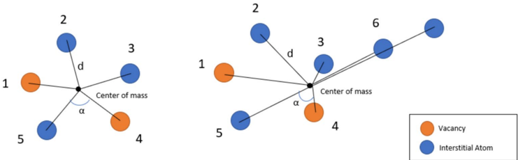
Figura 6. Esquema de la representación de la estructura del clúster basada en el centroide.
El método convencional: distancias y ángulos medidos desde el centroide. Izquierda, un clúster anular; derecha, el mismo anillo con una "cola". La cola desplaza el centroide y cambia todas las medidas, aunque la estructura subyacente sea casi idéntica — el defecto que motiva la propuesta del paper.
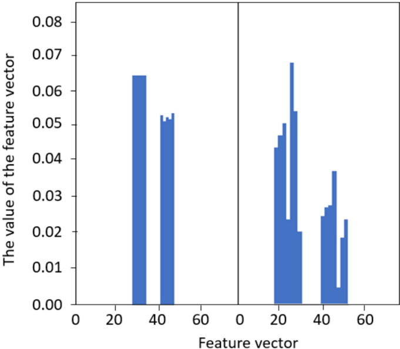
Figura 7. Histograma de los vectores de características de la estructura del clúster basados en el centroide.
La consecuencia del problema de la Fig. 6: los histogramas del anillo y del anillo con cola resultan completamente distintos. Dos estructuras físicamente similares caerían en categorías diferentes — el método del centroide amplifica el ruido y los detalles locales.
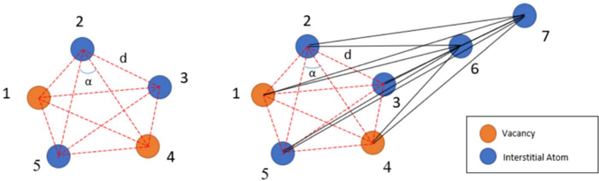
Figura 8. Esquema de la representación de la estructura del clúster basada en puntos adyacentes.
La propuesta del paper: medir distancias entre defectos vecinos y ángulos entre pares de vecinos respecto de un tercero. La parte anular de ambos clústeres produce exactamente los mismos valores; la cola solo añade entradas al histograma sin alterar las existentes.
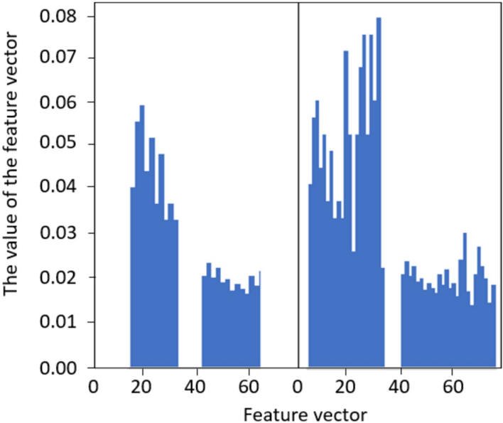
Figura 9. Histograma de los vectores de características de la estructura del clúster basados en puntos adyacentes.
Contraparte de la Fig. 7 con el nuevo método: los histogramas del anillo y del anillo con cola comparten la mayor parte de sus características, de modo que el clustering los agrupa correctamente como estructuras similares. Es la validación conceptual del descriptor propuesto.
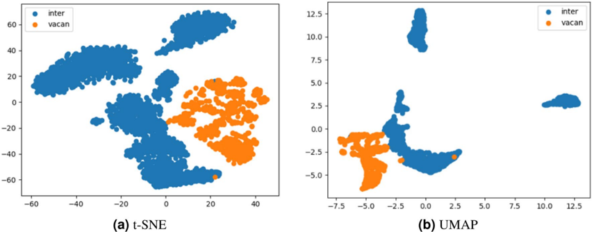
Figura 10. Resultados de la reducción de dimensionalidad con los algoritmos t-SNE (a) y UMAP (b). Cada punto es un clúster de defectos; azul = clústeres intersticiales, naranja/amarillo = clústeres de vacancias.
Aunque las features no se diseñaron para distinguir vacancias de intersticiales, ambas proyecciones los separan limpiamente: la geometría codifica física real. Los autores eligen UMAP para el pipeline porque preserva mejor la estructura global y produce grupos más compactos, lo que favorece al clustering por densidad (HDBSCAN).
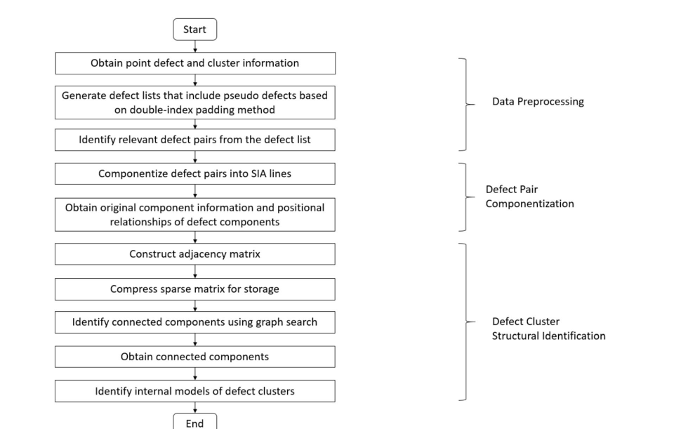
Figura 11. Proceso de reconocimiento y análisis de configuraciones de clústeres de defectos de cascada. (Figura recortada de la página del PDF; Docling no la extrajo automáticamente.)
El segundo pipeline del paper, complementario al de la Fig. 4: preprocesamiento (listas de defectos con pseudo-defectos), componentización de pares en líneas SIA, y la identificación estructural vía matriz de adyacencia comprimida y búsqueda de componentes conexas. Es el camino que lleva de coordenadas crudas a etiquetas como "paralelo <111>" o "anillo C15".
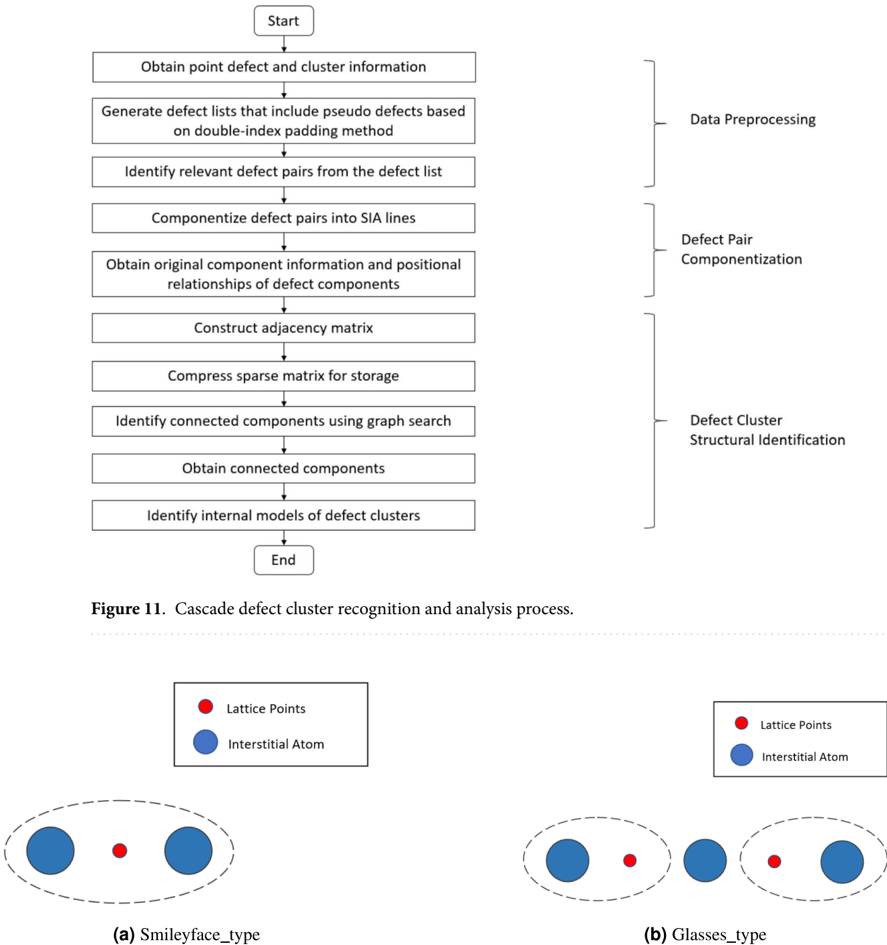
Figura 12. Defectos de tipo smileyface (a) y pares de tipo glasses (b).
Los "ladrillos" de las líneas SIA: configuraciones donde dos o tres átomos intersticiales comparten un punto de red (azul = intersticial, rojo = punto de red). El par glasses tiene 3 intersticiales y 2 vacancias pero cuenta como un solo defecto neto; los pseudo-defectos asociados son la clave para reconocer la configuración interna.
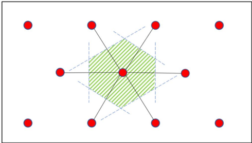
Figura 13. Esquema de la estructura bidimensional de la celda primitiva de Wigner-Seitz (rojo: puntos de red; verde rayado: celda primitiva W-S).
Construcción clásica de la celda W-S: se conecta un punto de red con sus vecinos y se trazan los bisectores perpendiculares; la región encerrada define el "territorio" de cada punto de red. Todo átomo que caiga dentro de la celda de un punto de red ya ocupado se cuenta como intersticial — la base geométrica del conteo de defectos.
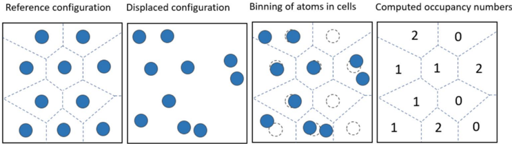
Figura 14. Esquema del análisis de defectos mediante el método de la celda primitiva W-S: configuración de referencia, configuración desplazada, asignación de átomos a celdas y números de ocupación calculados.
El conteo en acción: tras la cascada, cada átomo se asigna a su celda W-S más cercana. Ocupación 1 = átomo normal, 0 = vacancia, ≥2 = intersticial. El paper optimiza este método (O(N²) en su forma directa) con el doble puntero hasta O(N log N), haciéndolo viable para 16 millones de átomos.
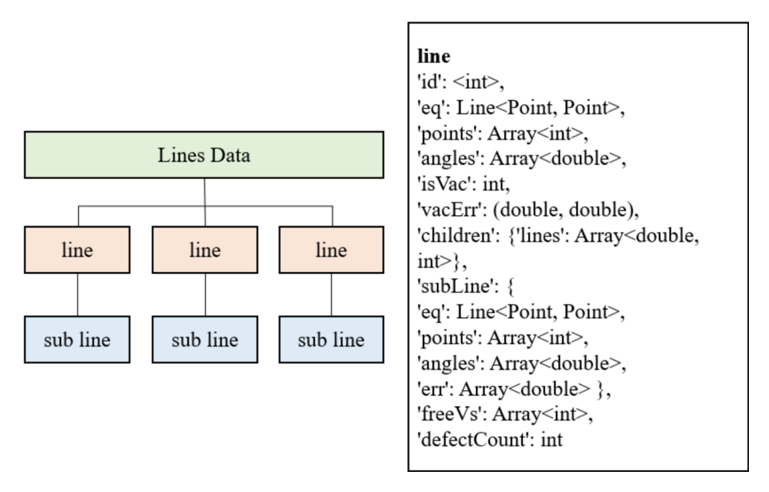
Figura 15. Organización de los datos de información de componentes: jerarquía LinesData → líneas → sublíneas (izquierda) y campos JSON de cada línea SIA (derecha). (Compuesta a partir de los dos paneles extraídos por separado.)
El formato con el que se serializa cada clúster componentizado: cada línea SIA guarda su ecuación paramétrica, los IDs de sus defectos, sus ángulos con los planos x/y/z (≈ dirección del vector de Burgers), sublíneas fusionadas y defectos aislados. Es el contrato de datos entre la componentización y el reconocimiento de configuraciones.
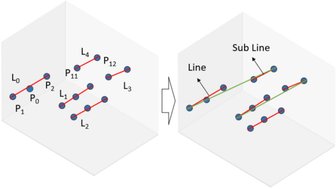
Figura 16. Construcción de ensambles de líneas SIA.
Ejemplo concreto con un clúster de 13 defectos: los smileyface/glasses se conectan primero en 5 líneas; luego, usando un K-D tree para hallar vecinos, las líneas que distan <0.3·L y forman <20° se fusionan, dejando 3 líneas SIA. El desorden aparente del clúster queda reducido a unas pocas componentes orientadas.
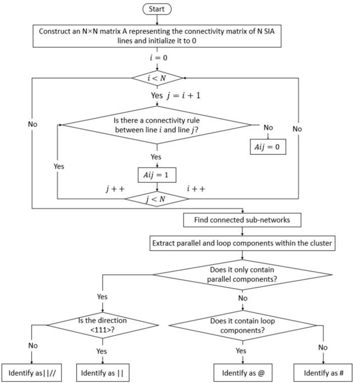
Figura 17. Pasos del algoritmo para la identificación de la configuración de los clústeres de defectos.
De líneas SIA a etiquetas físicas: se construye la matriz de adyacencia N×N entre líneas según reglas de distancia/ángulo, se comprime (CSR) y se buscan componentes conexas. Si la búsqueda reencuentra un nodo ya marcado, la componente es un anillo; si no, es paralela o aislada.
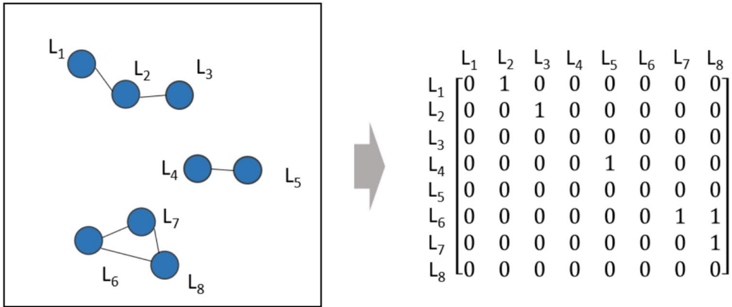
Figura 18. Búsqueda de componentes conexas de una matriz dispersa.
Detalle de implementación con impacto práctico: con muchas líneas SIA la matriz de adyacencia es enorme y casi toda nula. El almacenamiento CSR (arrays data, indices, indptr) evita desperdiciar memoria y acelera la búsqueda en anchura de componentes conexas.
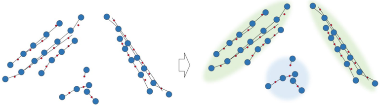
Figura 19. Las componentes conexas se representan como componentes paralelas o componentes de anillo.
Las dos topologías objetivo: líneas SIA paralelas (d ≤ 1NN, θ≈0° — precursoras de lazos de dislocación) y anillos (d = 1NN/3NN, θ≈60°/90° — la firma del clúster C15). Lo que no encaja en ninguna se etiqueta como metaestable, normalmente estructuras transitorias por vibración térmica.
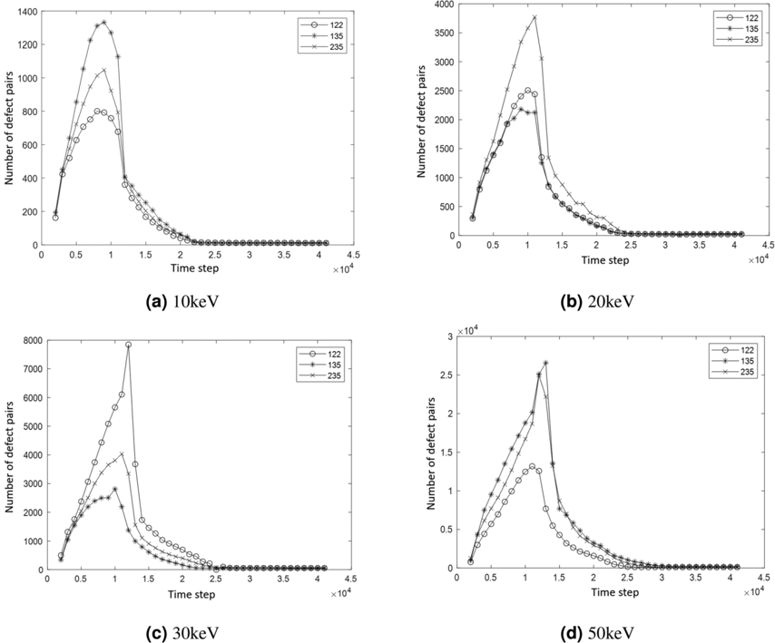
Figura 20. Curvas de variación de la cantidad de pares de defectos según la dirección del PKA ([122], [135], [235]) a distintas energías: (a) 10 keV, (b) 20 keV, (c) 30 keV, (d) 50 keV.
La física clásica de cascadas reproducida por el método propio: pico térmico (~paso 10 000, miles de pares), recombinación masiva y estabilización hacia el paso 23 000 con una fracción superviviente pequeña. La dirección del PKA cambia la altura del pico pero no el patrón; los supervivientes finales siguen el modelo NRT.
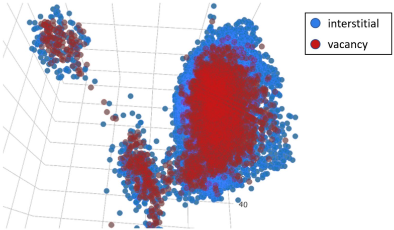
Figura 21. Visualización de la distribución espacial de los defectos (azul: intersticiales; rojo: vacancias). Datos del paso 8000 con PKA de 30 keV en dirección [235].
El resultado integrador: los clústeres de vacancias (rojo) ocupan el corazón de la cascada y los intersticiales (azul) la envuelven en la periferia — la separación espacial que gobierna cuánta recombinación habrá y qué defectos sobreviven. La cascada presenta subcascadas (lóbulos separados), típico de PKA ≥ 20 keV.
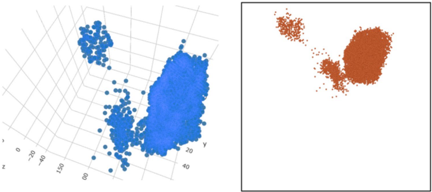
Figura 22. Visualización de los átomos intersticiales: método propio (izquierda) frente a OVITO (derecha).
Validación visual del pipeline: posiciones y formas de los clústeres intersticiales coinciden con el estándar de la comunidad (OVITO). La ventaja diferencial del método propio es que además permite analizar vacancias e intersticiales por separado y extraer estadísticas de configuración.
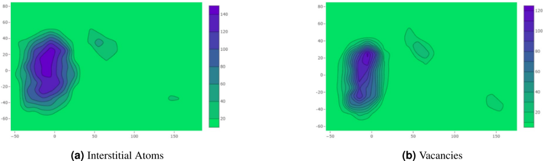
Figura 23. Mapa 2D de la densidad espacial de átomos intersticiales (a) y vacancias (b), en una caja de simulación de 120×120×120.
Proyección cuantitativa de la Fig. 21: ambos mapas comparten la misma región caliente (la cascada principal) pero el máximo de vacancias está más concentrado y el de intersticiales es más extendido. Este tipo de mapa, que OVITO no genera por especie, permite cuantificar la correlación espacial vacancia-intersticial.
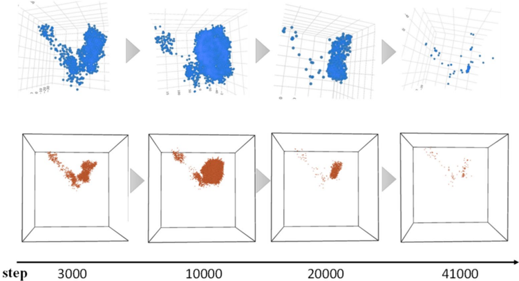
Figura 24. Proceso de evolución de los clústeres de defectos en los pasos 3000, 10 000, 20 000 y 41 000. Fila superior: método propio; fila inferior: OVITO.
El método sigue la dinámica completa de la cascada: crecimiento de los clústeres intersticiales hasta el pico térmico y contracción posterior por recombinación, en perfecto acuerdo con OVITO y con las curvas de la Fig. 20c. Demuestra que el pipeline sirve para estudios dinámicos, no solo para instantáneas.
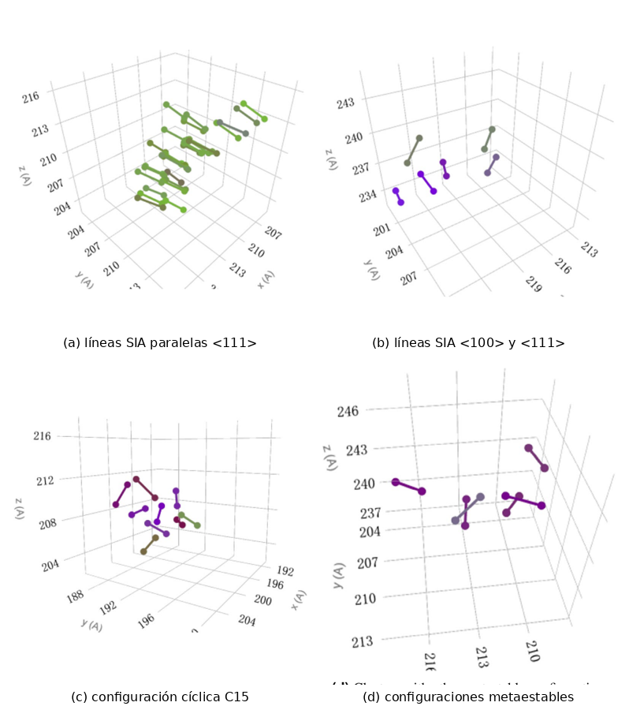
Figura 25. Diferentes configuraciones de defectos en cascadas de colisión en Fe: (a) clústeres estables de líneas SIA paralelas a la dirección <111>; (b) clústeres de líneas SIA paralelas a <100> y <111>; (c) configuración cíclica estable (C15); (d) clústeres con otras configuraciones metaestables. (Compuesta a partir de los cuatro paneles extraídos por separado.)
El producto final del reconocimiento automático: las cuatro familias de configuraciones (||, ||//, @, #) identificadas sin intervención manual en los datos de cascada. La fracción de C15 (10–17 % de los clústeres según la energía) cae dentro del rango 5–18 % de la literatura, confirmando que el modelo detecta estructuras físicamente reales y no artefactos de clasificación.